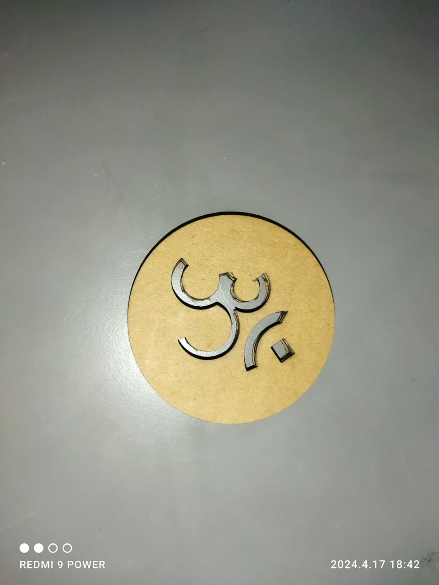
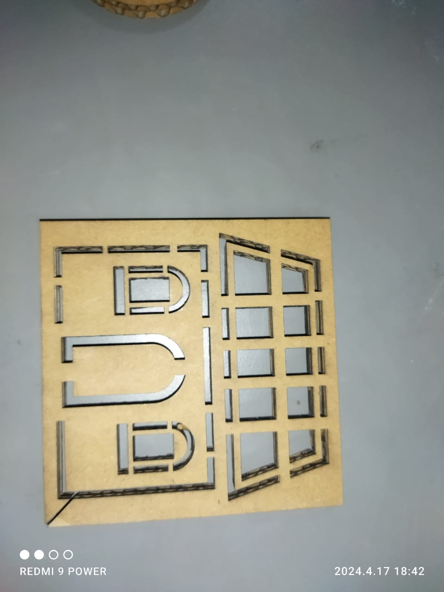

Objectives
Group formation and working.
- Form groups of 4 members for faster task completion and more understanding.
- Document your work with videos and images of the tasks done(Individually).
Individual Tasks
- Design, lasercut, and document a press-fit structure, which can be assembled in multiple ways. Also keep an eye on the error curve try to keep it minimum.
- Understand the functioning and operation and handling of the laser cutter with also emergency procedure of the machine.
Group Members
- Prathamesh Magar
- Rahul Choudhary
Laser Cutting
On first day we were given a task to design 2D structure fit for LaserCutter we tried but in end it was rendering properly in the LaseCAD software we tried but just didnt work we tried making a Swastik design on a sun but it didnt render in LaserCAD so others were done after completion of class at 8p.m. we stated work after that and we designed it all over again and it executed sucessfully. First day we had minimum interaction with LaseerCAD software.
Summary:
After completion of the task we found that the design should only be on top plane while designing using a 3D Design Software.
Features

- Top cutting precision and positional accuracy
- Improved edge quality and surface finish
- Strong repeatability
- The use of materials not cut by traditional devices
- Drilling and engraving in addition to cutting
- Negligible workpiece degradation
- Cost-effectiveness
- Minimal thermal stress zone
- Cuts of complex shapes
2D designs
Creating designs for laser cutting involves preparing 2D vector graphics that define the shapes to be cut or engraved. Here's a step-by-step guide to designing for laser cutting
 3D Design
Laser cutting 3D designs using 2D techniques involves a process called "kerf bending." Kerf bending takes advantage of the width of the laser beam, known as the kerf, to create 3D shapes from 2D materials.
For this assignments we used 6mm cardbord sheet

HOUSE
Power=40 Speed=40 Worktime=2

BIRD NEST
Power=40 Speed=40 Worktime=3

BIRD NEST
Power=40 Speed=40 Worktime=3

WAR SHIP
For this ship we used 3 mm cardbord sheet